Helicopter operators have to prove that every pilot on every flight is trained, current and signed off. Two of them were keeping that proof in Excel — written first on paper, in the air, while the instructor was also teaching. I designed the training management module, inside an existing operations platform, that replaced the spreadsheet. It has been live for two months.
Role
Solo designer and product owner
Team
Me, one frontend, one backend
Timeline
2 months design, 2 months build
Status
Shipped · in evaluation at two operators
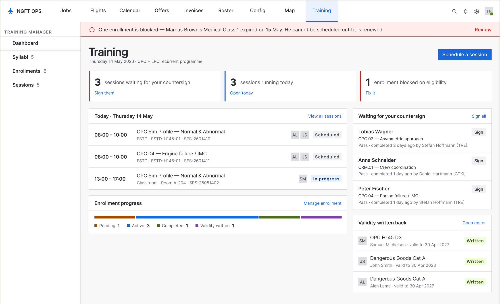
01 · Dashboard. The front door leads with what needs a person: countersigns waiting, sessions today, enrollments blocked. Four equal panels became three counts with the action beside each.
01By the numbers
2
helicopter operators
Using it now and feeding back
6
instructors
Three from each operator
15
people interviewed
8 instructors, 7 trainees
30–40 → 10–12
minutes per trainee
Write-up time. The before figure is reported, the after is logged.
2 of 3
months of evaluation done
Both operators run a three-month trial before adopting a system
14 of 16
screens shipped
Mobile and tablet are the next release
02Context and constraints
A training system that had to live inside dispatch
NGFT builds dispatch and operations software for helicopter operators. Training was not part of it. The two operators in this project kept their training records in Excel: an instructor wrote remarks on paper during the flight, next to a printed question sheet, and typed them into a spreadsheet afterwards. Nothing connected that spreadsheet to the roster the same company used to decide who flew tomorrow.
Two months of design
The window was fixed before the scope was. Everything below is a consequence of deciding what fitted inside it.
It had to live inside the existing operations platform
Training flights are also operational flights — same aircraft, same crew, same duty hours. A training record kept outside the operations system is a record nobody checks before rostering someone. This single constraint is why the module writes validity back to the crew roster instead of storing it on its own.
The authority signs on paper
Licence endorsements leave the system and come back as a scan. No design decision could pretend that loop was closed, so the screens say so on their face.
The company’s design system already existed
I did not build the library. Anything new had to earn its place against what was already there.
03Understanding the user
Fifteen people, and a stack of session recordings
I interviewed eight instructors and seven trainees across the two operators by video call. Separately I watched recordings of real training sessions, and the business analysis team ran a requirements pass with each client. Three sources: what people say, what they do, and what the company says it needs. They did not agree, which is the useful part.
8 instructors
Line and type-rating instructors at both operators. Interviewed by video call. They are the people who hold the record while it is being made — and the people who were writing on paper.
7 trainees
The other end of the same record. They never saw it until it was finished, and could not tell you what they had been marked down on until the next session.
Recordings of real sessions
The most useful source, and the one that contradicted the interviews. What people described doing and what they were doing were not the same thing.
BA requirements, per client
What each operator said it needed, gathered independently of me. Useful as a boundary — it told me what could not be dropped, not what should be built.
04The finding that moved the design
I was designing the wrong platform
“During flight our attention is divided between the trainee and the writing.”
Instructor, paraphrased from interview
I had assumed a web application. The instructors were already filling in their records at a desk afterwards, so a web form seemed to match the behaviour exactly. Then I watched the recordings.
In the session, the instructor had a printed question sheet in front of him and was writing his remarks in the margin beside each item, while flying and while teaching. The spreadsheet came later, at a desk, from those notes. The behaviour I had designed for — sitting down afterwards and typing — was not the behaviour. It was the second half of a behaviour whose first half was happening in the air, on paper, under load.
That reframed the problem. The record was being written twice. Any system that only replaced the second pass would make the typing faster and leave the real cost — a divided cockpit — exactly where it was.
Not everyone wanted it changed
Several instructors defended the paper and asked, plainly, why we were changing something that worked. Paper does not crash, does not need a login, and does not run out of battery at 1,500 feet.
Two of them changed their minds
Two of the instructors who pushed back hardest now say they prefer the system, and the reason they give is that it is less hassle — one pass instead of two. I did not persuade them; using it did.
05Diagnosis
Four symptoms, one cause
The operators described four separate problems. They are not four problems. They are one structural fact with four faces: the training record lived somewhere the rest of the operation could not see, in a format that could not hold what the regulation asks of it.
“It takes half an hour per trainee”
Because the record is written twice — once on paper in the air, once into Excel at a desk. The complaint is about typing. The cause is duplication.
“We cannot find what someone was marked down on”
Because a spreadsheet cell holds a sentence, not a graded outcome against a named exercise. There is nothing to search, so the answer lives in the instructor’s memory.
“We only find out a rating expired when someone chases it”
Because the file that knows a pilot’s validity and the system that rosters that pilot tomorrow are different files, owned by different people.
“Every instructor grades slightly differently”
Because nothing enforces a vocabulary. Pass, partial and repeat mean whatever the person typing them meant that day, and a later examiner has to guess.
06Reframing
It is not a training database. It is a gate on the roster.
The brief said training management. Treated as training management, the job is to store syllabi and record outcomes, and a spreadsheet does most of that badly but adequately. That framing produces a filing cabinet, and a filing cabinet is exactly what they already had.
The constraint pointed somewhere else. Training flights are operational flights. The same aircraft, the same crew, the same duty hours, rostered by the same dispatcher, in the same system. So the question the module actually has to answer is not “what training has this pilot done?” but “is this pilot allowed on tomorrow’s flight, and can the operator prove it?”
That is a different product. It makes validity — not the syllabus, not the session — the thing the system exists to produce. Everything upstream is the chain of custody for one date on a crew roster: a syllabus is a promise about what validity requires, an enrollment is a claim that someone is eligible to attempt it, a session is evidence, and a signature is the moment the evidence becomes a permission. Design the chain and the filing cabinet comes free. Design the filing cabinet and the chain never appears.
07The design
One loop, six moves
The module is one loop that runs from a syllabus to a date on the roster. Each step below is a screen in the product, and each exists because of something in the diagnosis rather than because a training system usually has one.
01
Build and version a syllabus
A syllabus is a promise about what validity requires, so it has to be versioned and approved like a document, not edited like a spreadsheet. Validity and the revalidation window can be changed until it is approved and not after — because the moment a trainee is enrolled, those two numbers are what the roster will eventually be told.
The outline marks incomplete items, and a panel names the three things standing between this version and approval, each with a route to fix it.
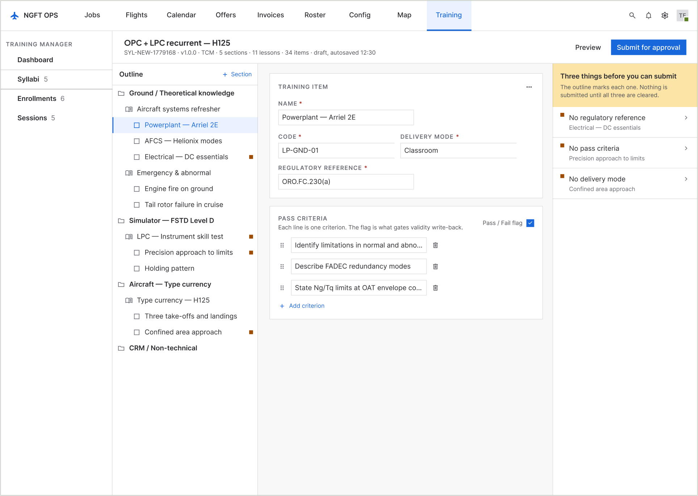
05 · Syllabus builder
02
Approve a version by its diff
The approver’s real question is not “is this syllabus correct” but “what changed since the last one I approved”. The screen answers that question instead of asking them to read the whole thing again.
Comments anchor to the item they are about and stay on the version record, so a disagreement from six months ago is still attached to the line it was about.
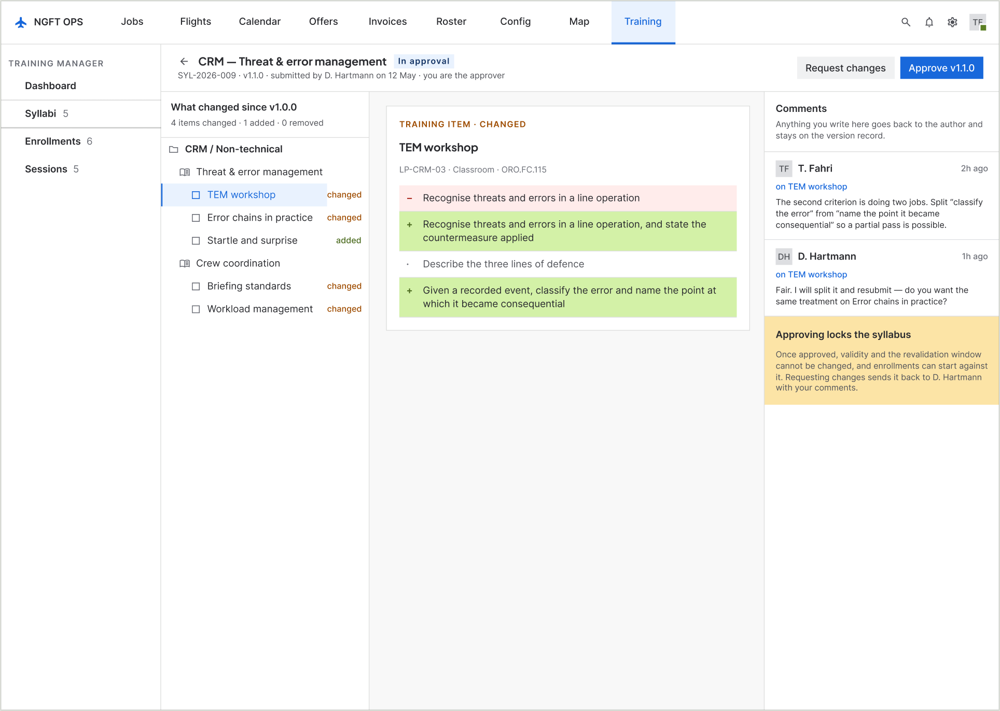
09 · Syllabus approval
03
Enrol against checks, not a sentence
Eligibility used to be free text in a table cell. It is now five named checks — licence, medical, prerequisites, recency, duplicate enrollment — each pass, watch or blocking.
A blocking check can be overridden only by a named person who types a reason, and the reason is stored on the enrollment where the approver and the auditor can see it. The override is not hidden; it is the loudest thing on the screen.
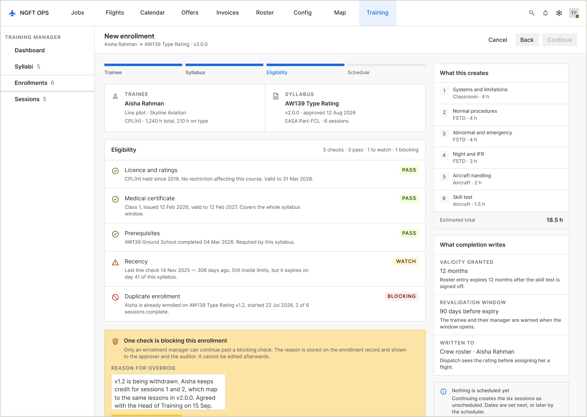
10 · Enrollment eligibility
04
Schedule in the mode the lesson demands
One screen, not five. The delivery mode — classroom, FSTD, aircraft, web — decides which fields are required, and the screen states which fields a switch would replace so nobody loses typing.
Because the module lives inside OPS, the same pass can check the device, the instructor, the trainee and duty-and-rest. The rest shortfall on the right is ten minutes, and the fix is one tap.
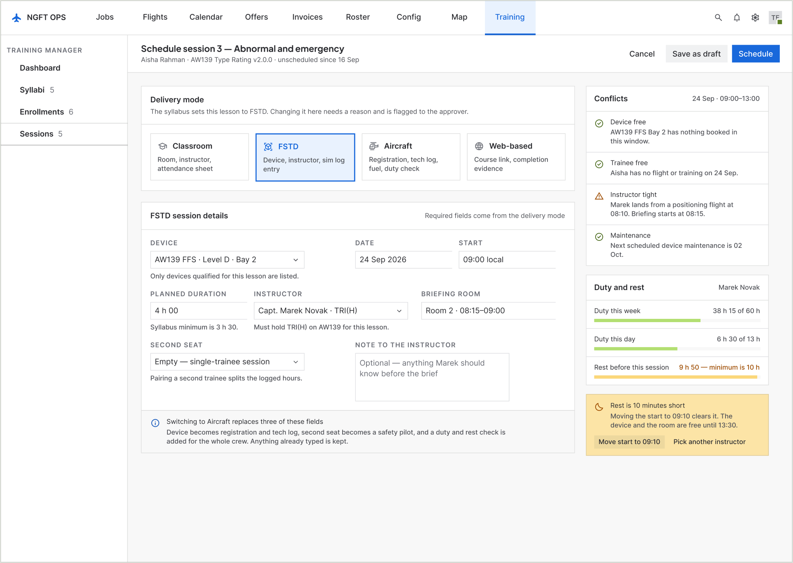
11 · Schedule a session
05
Record outcomes in fixed columns
This is the screen the whole thing exists for. Statuses are columns, not loose chips, so an instructor can read down one column and find everyone who was deferred.
A rail counts what is recorded, names what is missing and on which item, and disables the end-session button with the reason written next to it. In the old spreadsheet there was no way to know you had missed one until someone asked.
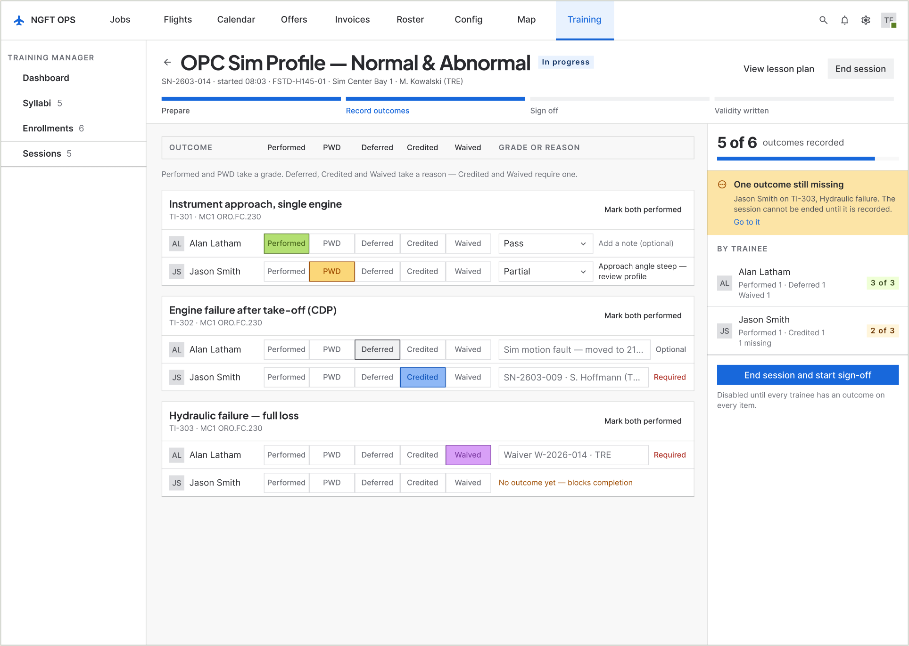
06 · Running the session
06
Sign, and watch validity land
Sign-off is its own screen with exactly one actionable step, because it is the irreversible moment in this product.
Beside the cascade sits a statement of what is about to be written to the roster and the fact that it cannot be undone from here. A correction afterwards becomes a second, linked entry — not an edit.
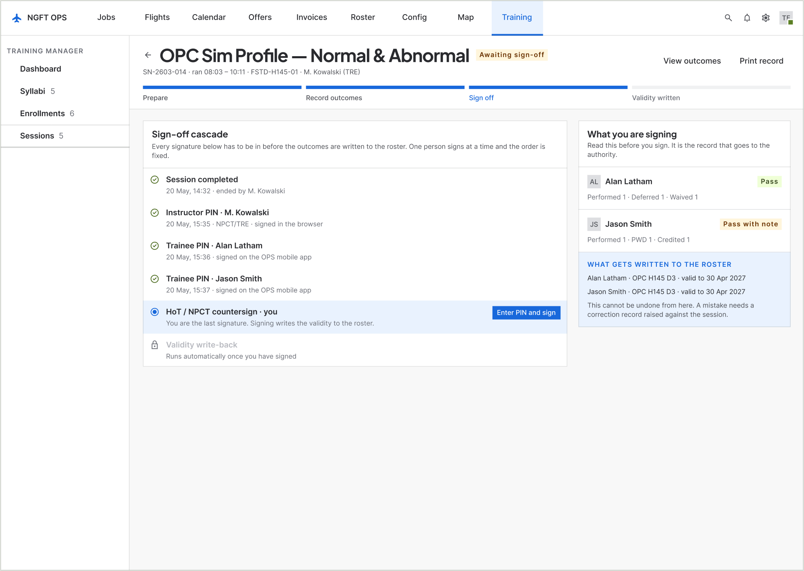
07 · Sign-off
08The decisions
Five decisions that shaped every screen
01
A disabled button must say why it is disabled
There are four places in this module where the system refuses to continue: a syllabus that is not complete, an enrollment with a blocking check, a session with an unacknowledged brief, a sign-off with ungraded outcomes. In every one of them the reason sits beside the button in a sentence, with the route to fix it. A greyed-out control with no explanation is the design equivalent of hanging up.
02
Name the irreversible moment, once
Almost nothing in this product is destructive. Two things are: approving a syllabus version, and signing a session. Both get a full-width statement of what is about to become unchangeable — and, on the session, the fact that a correction afterwards becomes a second linked entry rather than an edit. Spending that much space on two moments is only affordable because everything else is quiet.
03
Show what the system will write, before it writes it
Every screen that causes a record to exist says what record it will be. The enrollment screen lists the six sessions it is about to create. The completion screen lists the four records it created. This is the habit that makes an operations system trustworthy — the alternative is a success toast and a user who checks the spreadsheet anyway.
04
Repeats stay on the record
A repeated exercise is not a failure, and hiding it would make the record useless to the next examiner. The design shows repeats in the session, in the review, and on the completed record — with the session that cleared each one. The regulation wants the history; an instructor wants to know what to watch.
05
Do not pretend the loop is closed
The authority signs licence endorsements on paper. The design could have shown a tidy green tick. Instead the completion screen carries a lozenge that reads OUTSIDE NGFT and a line explaining that the roster entry is provisional in the regulator’s eyes until the scan comes back. Honest beats tidy in any system someone gets audited on.
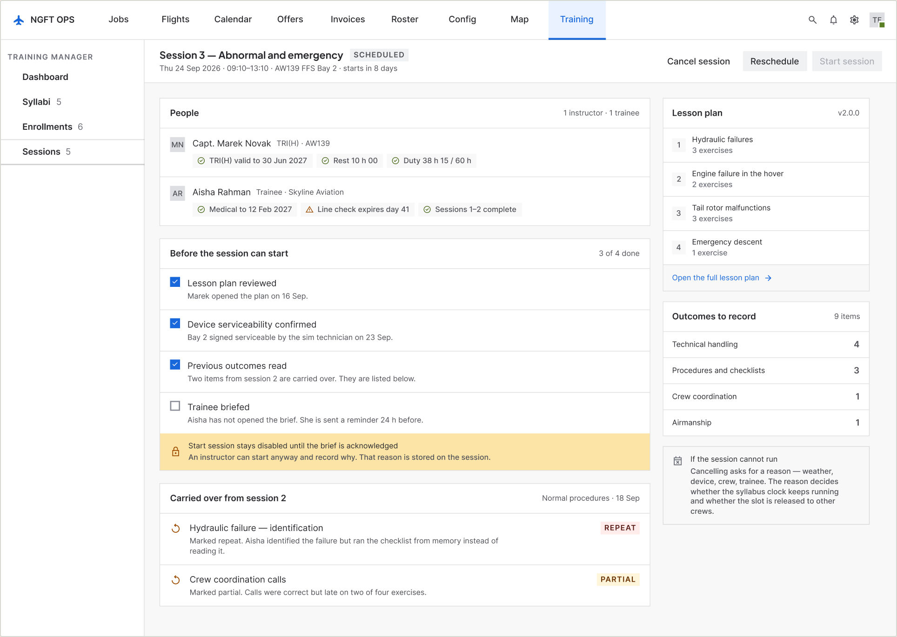
12 · Session, before it startsDecision 1 in practice. Start session is disabled, and the bar under it names the unmet item and offers the way past it. A greyed-out control with no explanation is the design equivalent of hanging up.
09Failure states
Where a training record goes wrong
This is a record an operator gets audited on. What the screens do when things go wrong matters more than what they do when everything is fine.
When
What the system does
A blocking eligibility check
The enrollment stops. Continue is disabled, the blocking check is named, and the only way past is a manager typing a reason that is stored on the record and shown to the approver.
The trainee has not read the brief
The session can still start — an instructor is not going to stand in a sim bay arguing with software — but the reason is recorded on the session and shown to the approver.
Outcomes are missing at the end
End session is disabled and the three missing exercises are named. Ending early is allowed, and marks them not flown rather than silently blank.
An instructor disagrees with the plan mid-session
They cannot edit an approved syllabus from inside a running session. They file a suggestion against the exercise, with the session attached, and it reaches the syllabus owner as a comment on the version.
A signed outcome turns out to be wrong
It is not edited. A correction becomes a second, linked entry stating what changed and why, and the original stays visible. This is the difference between a record and a document.
The rating lapses before revalidation
The system proposes the longer renewal syllabus instead of the revalidation one, because a lapsed rating is legally a different training requirement — not the same one, late.
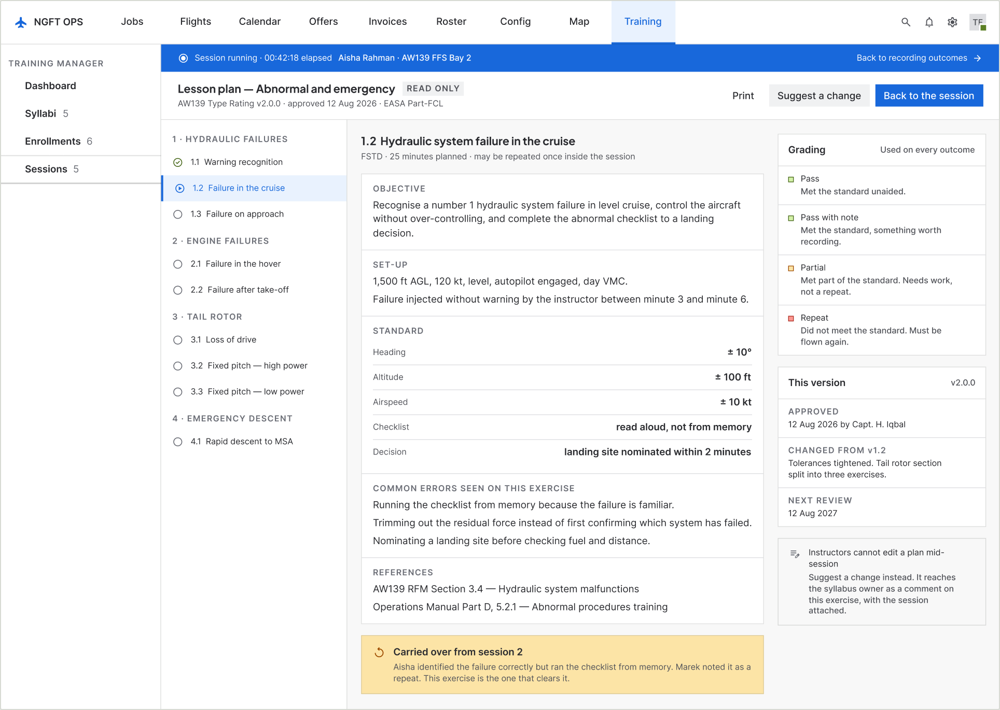
13 · Lesson plan, opened mid-sessionAn instructor who disagrees with the plan cannot edit an approved syllabus from inside a running session. They file a suggestion against the exercise, with the session attached, and the running session stays visible behind the sheet.
10System work
Three components, and a reason for each
The company’s design system already existed — I did not build it, and this module is not an excuse to fork it. Sixteen screens produced three new components. Everything else is existing Button, Text field, Textarea, Select, Checkbox, Toggle, Lozenge, Badge, Tag, Avatar, Side nav, Top nav, and the Stepper.
6 states
Outcome row
One trainee’s outcome for one item, with the five statuses in fixed columns. The library had a table row, but forking it to hold five mutually exclusive controls would have made it a different component wearing the same name.
4 states
Sign-off step
One link in the signature cascade. Only the current step carries a button — a rule that is easier to enforce in a component than to remember on every screen.
9 variants
Outline node
Section, lesson and item, each with a selected and an incomplete state. The incomplete state is the point: it is what lets the syllabus outline answer “why can I not submit this?”
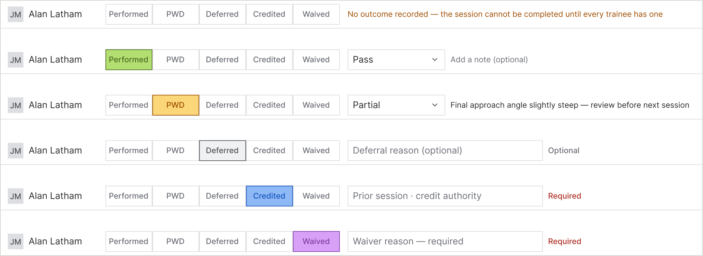
Outcome row · six statesThe component the whole module turns on. The library had a table row; forking it to hold five mutually exclusive controls would have made it a different component wearing the same name.
11Validation
Fifteen people before, six instructors after
Before the design: eight instructors and seven trainees interviewed, plus recordings of real sessions and a requirements pass by the BA team at each client. That is where the paper finding came from, and it is the only reason the module is shaped around removing a duplicate pass rather than around making a form nicer.
After the build: it went live at two operators with six instructors, three from each. Both companies run a mandatory three-month evaluation before adopting any new system, so the Excel sheets are still being filled in alongside. Two of those three months are done.
What this is not
Six instructors at two operators over two months is a pilot, not a proof. Both companies chose to evaluate this software, which makes them a friendly sample. Nothing here has been tested against an operator that did not want it, and no auditor has yet looked at a record the system produced. Those are the two tests that matter and neither has happened.
12Where it stands
What I can claim, and what I cannot
Measured and reported
Write-up fell from 30–40 minutes to a logged average of 10–12The before figure is what instructors reported about the Excel process; it could not be measured, because a spreadsheet does not have timestamps. The after figure is the average logged by the system across two months. Instructors independently describe it as “ten to fifteen minutes”, which is close enough to the log to be worth saying.
The size of the drop is arithmetic, not optimismThe Excel route was two passes over the same information: paper in the air, then typing at a desk. The module removes the second pass and structures the first. Removing one of two passes over the same data is a roughly threefold change, which is what the log shows.
Two instructors who resisted it now prefer itBoth had asked why anything was being changed. Both now say they would not go back, and the reason they give is less hassle. Reported, in their words, not measured.
It is live and being evaluated at two operatorsFourteen of the sixteen screens are in the product. Mobile and tablet are the next release.
Not yet true
The spreadsheet is not deadInstructors are still filling in Excel alongside the system. That is company policy for the three-month evaluation, not a verdict on the software — but until month three ends, nobody has actually stopped doing the old thing.
The paper pass is gone — in release twoThis module removed the Excel pass, not the cockpit pass, and instructors said so: “we still have to do it on paper and then on the web.” The tablet release now in trial answers it — the paper has stopped. Credit for that belongs to release two, not to this one.
No auditor has seen a record from itThe whole argument for the design is that it produces a record that survives an audit. That claim is untested. The first real test is an authority looking at one.
No trainee-side outcomeSeven trainees were interviewed and the design gives them a record they can read. None of them has one yet — the trainee app is the next release.
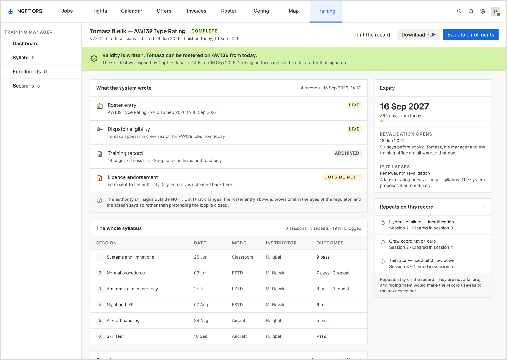
14 · Validity writtenWhat the loop produces. Four records, and the licence endorsement marked OUTSIDE NGFT because the authority still signs on paper — the screen does not pretend the loop is closed.
13Reflection
I shipped the wrong half first
The strongest finding in the research was that instructors write on paper in the air because their attention is divided. I then built a web module that is used at a desk afterwards, and put the fix for that finding in release two.
There was a reason, and it is not a bad one. I wanted a solid base — a proven data model, a record structure the operators had signed off, and instructors who already knew the vocabulary — before putting anything in a cockpit. Familiarity first, then the harder surface. As product owner I made that call deliberately.
What I would do differently is the shape of release one, not the order of the releases. I would have built the web module responsively for tablets from the start — the same product, usable in the hand on day one — and then designed the dedicated tablet app properly as release two. That would have let instructors stop writing on paper months earlier, on a rougher tool, instead of waiting for the right one. The complaint I am hearing now — paper, then web — is the cost of that decision, and it was avoidable.
14What is next
The half of the finding that is still open
Release two is the instructor tablet app: outcome capture in the aircraft and the sim, at the moment it happens, on a device held in one hand. It is now in trial with the same six instructors, and the paper has stopped. It has its own case study. The trainee app follows.
After that, the open question is the one the completion screen already admits to: the authority signs licence endorsements on paper, and until that changes the roster entry the system produces is provisional in the regulator’s eyes. Closing that loop is a conversation with a regulator, not a design problem — but the two screens that would change are already marked.
15The full set
Sixteen screens
Fourteen are in the product. The last two — the trainee phone and the instructor tablet — are the next release and have their own case study.